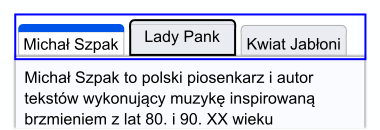

Objaśnienie KS 2.4.13:Wygląd fokusu (Poziom AAA)
W skrócie
- Cel
- Ułatw dostrzeżenie fokusu klawiatury.
- Co robić
- Użyj wskaźnika fokusu o odpowiedniej wielkości i kontraście.
- Dlaczego to jest ważne
- Wiele osób, w tym osoby starsze, nie widzi drobnych zmian w wyglądzie.
Intencja
Celem tego kryterium sukcesu jest zapewnienie, że wskaźnik fokusu klawiatury będzie wyraźnie widoczny i dostrzegalny. Wygląd fokusu jest ściśle powiązany z KS 2.4.7 Widoczny fokus i KS 1.4.11 Kontrast elementów nietekstowych. Widoczny fokus wymaga istnienia widocznego wskaźnika fokusu, gdy komponent ma fokus klawiatury; kryterium Widoczny fokus określa minimalny poziom widoczności. Tam, gdzie kryterium Kontrast elementów nietekstowych wymaga, aby komponent miał odpowiedni kontrast z tłem w każdym ze swoich stanów, kryterium wymaga wystarczającego kontrastu samego wskaźnika fokusu.
Dla osób widzących z niepełnosprawnością manualną, które używają klawiatury lub urządzenia korzystającego z interfejsu klawiatury (takiego jak przełącznik lub wprowadzanie głosowe), informacja o aktualnym miejscu fokusu ma kluczowe znaczenie. Widoczny fokus musi odpowiadać także potrzebom użytkowników słabowidzących, którzy również mogą polegać na klawiaturze.
Wskaźnik fokusu klawiatury może przybierać różne formy. To kryterium sukcesu zachęca do stosowania ciągłego konturu wokół komponentu interfejsu użytkownika, który ma fokus, ale dopuszcza inne typy wskaźników, które są co najmniej tak samo duże.
W tym dokumencie objaśniającym omówione zostaną wymagania dotyczące minimalnej powierzchni, wymagania dotyczące kontrastu kolorów, a na koniec wymienione zostaną niektóre wyjątki dotyczące dotyczące oprogramowania użytkownika.
Minimalna powierzchnia
Pierwsza część kryterium sukcesu określa minimalną powierzchnię wskaźnika fokusu:
- jest co najmniej tak duży, jak obszar obwodu o grubości 2 pikseli CSS komponentu lub podkomponentu bez fokusu.
Określa jedynie minimalną powierzchnię wskaźnika fokusu. Nie wymaga, aby wskaźnik fokusu był dosłownie konturem o grubości 2 pikseli CSS, a jedynie, aby wskaźnik był co najmniej tak duży.
Jednak najprostszym sposobem spełnienia wymagań dotyczących rozmiaru jest użycie wskaźnika fokusu, który ma ciągły kontur o grubości 2 pikseli CSS.
Uwaga
Piksel CSS jest tym, czego programiści używają w deklaracjach CSS, takich jak „width”: 200px”.
Jest niezależny od urządzenia i nie należy go mylić z pikselami urządzenia, które
różnią się w zależności od fizycznej gęstości pikseli.
W pozostałej części tego dokumentu piksele CSS są oznaczone jako „px”.
Używanie ciągłego konturu
Najłatwiejszym i najczęstszym sposobem spełnienia tego wymagania jest użycie ciągłego konturu wokół komponentu. Kontur musi mieć grubość co najmniej 2px. Poniższa ilustracja przedstawia minimalnie gruby wskaźnik fokusu, w którym pas białych pikseli o grubości 2 pikseli tworzących tło strony wokół przykładowego przycisku został zmieniony na czarny.
W przypadku komponentów nieprostokątnych definicja „konturu” umożliwia autorom użycie jednego z następujących typów obrysu:
- ciągła linia otaczająca kształt, lub
- ciągła linia otaczająca minimalną obwiednię kształtu
Na przykład przycisk w kształcie gwiazdy może wykorzystywać wskaźnik fokusu zgodny z kształtem gwiazdy lub wskaźnik fokusu zgodny z obwiednią gwiazdy. W poniższych przykładach zostały już wybrane te same trzy gwiazdki, a fokus jest na trzeciej gwiazdce. W pierwszym przykładzie zastosowano wskaźnik fokusu, który odpowiada kształtowi skupionej gwiazdy. W pierwszym przykładzie zastosowano wskaźnik fokusu, który odpowiada kształtowi gwiazdki, która ma fokus. Drugi wykorzystuje prostokątny wskaźnik.

Nieznaczne odsunięcie wskaźników od komponentu, który ma fokus, jak w powyższych przykładach,
nie jest wymagane, aby spełnić wymagania dotyczące minimalnej powierzchni w ramach
kryterium sukcesu, ale może pomóc w zwiększeniu widoczności wskaźników. W CSS powszechnie
stosuje się do tego właściwości outline i outline-offset.
Najmniejszy możliwy wskaźnik grubości 2 pikseli CSS, który nadal stanowi „obwód”,
to linia ciągła, która pojawia się wewnątrz komponentu naprzeciw jego zewnętrznej
krawędzi, na przykład poprzez użycie właściwości CSS border. Wskaźniki umieszczone głębiej w komponencie (nie bezpośrednio przy zewnętrznej krawędzi
komponentu) muszą być grubsze niż 2 piksele CSS, aby spełnić wymagania dotyczące minimalnego
rozmiaru.
Należy pamiętać, że mogą obowiązywać różne wymagania dotyczące kontrastu elementów nietekstowych w zależności od tego, czy wskaźnik fokusu jest odsunięty od krawędzi komponentu, wstawiony w nią lub przy niej. Zobacz poniżej sekcję Związek z kontrastem elementów nietekstowych.
Inne kształty wskaźników
To kryterium sukcesu nie wymaga, aby wskaźniki fokusu miały ciągły kontur. Można zastosować inne kształty, o ile spełniają wymagania dotyczące minimalnej powierzchni.
Minimalny obszar wskaźnika fokusu dla kontrolki to obszar obwodu kontrolki o grubości 2 pikseli CSS (lub jej minimalnej obwiedni) w stanie kontrolki bez fokusu. Na przykład, jeśli kontrolka jest prostokątem o szerokości 90 pikseli i wysokości 30 pikseli, obszar obwodu o grubości 2 pikseli CSS jest różnicą pomiędzy obszarami:
- prostokątem o wymiarach 92 na 32 piksele (o 1 piksel większy ze wszystkich stron) oraz
- prostokątem o wymiarach 88 na 28 pikseli (o 1 piksel mniejszy ze wszystkich stron).
Daje to minimalny obszar (92px * 32px) – (88px * 28px) = 480px2.
Niektóre ogólne wzory na obwody typowych kształtów o grubości 2 pikseli CSS to:
- Prostokąt o szerokości w i wysokości h
- 4h + 4w
- Okrąg o promieniu r
- 4𝜋r
- Zaokrąglony prostokąt o szerokości w, wysokości h i promieniu obramowania r
- 4h + 4w – (16 – 4𝜋)r
Uwaga
Jeśli musisz zastosować skomplikowaną matematykę, aby ustalić, czy wskaźnik fokusu jest wystarczająco duży, prawdopodobnie jest to znak, że powinieneś zamiast tego użyć większego wskaźnika. Im bardziej widoczna zmiana po ustawieniu fokusu na elemencie, tym łatwiej jest ją zobaczyć.
W poniższych 2 przykładach zastosowano przycisk o wymiarach 90 pikseli szerokości i 30 pikseli wysokości, a minimalny wymagany obszar wynosi 480 pikseli2:
Uwaga
Preferuj stosowanie technik wskaźników fokusu, które skalują się zarówno z szerokością, jak i wysokością kontrolki z fokusem. W przeciwnym razie, jeśli elementy sterujące zmieniają rozmiar w różnych odmianach strony (na przykład w przypadku projektu responsywnego), wskaźnik może w niektórych odmianach spełniać wymagania dotyczące obszaru, ale w innych nie. Na przykład na powyższym rysunku, jeśli szerokość dwóch wyróżnionych prostokątów nie skalowałaby się wraz ze wzrostem szerokości przycisku, przestałaby spełniać minimalne wymagania dotyczące obszaru, gdyby przycisk musiał się powiększyć, aby pomieścić dłuższą etykietę.
Innym sposobem osiągnięcia wymaganej powierzchni jest zmiana wyglądu całego elementu, na przykład poprzez zmianę jego koloru. Może to być skuteczne w przypadku zestawu blisko rozmieszczonych przycisków. Poniższy przykład ilustruje to z 5 gwiazdkami; środkowa gwiazdka jest wypełniona ciemniejszym kolorem, aby wskazać fokus. Jednak znacznie trudniej jest wykryć taki wskaźnik fokusu, gdy komponenty nie znajdują się blisko siebie i dlatego nie można ich łatwo porównać. Dla użytkowników korzystających z powiększenia porównanie komponentów znajdujących się nawet stosunkowo blisko siebie może być trudne, dlatego nie jest to uważane za dobrą praktykę.

Łącza śródliniowe
Jeśli łącze śródliniowe jest podzielone na wiele linii, niektóre metody tworzenia
wskaźnika fokusu powodują różne wyniki w przeglądarkach. Kontur CSS oddzielnie otacza każdą część łącza, która dzieli się na wiele linii. Jest to
zdecydowanie najpopularniejsza technika CSS do wskazywania fokusu i daje wynik spełniający
definicję minimalnej obwiedni, ponieważ każda część jest solidnie otoczona fokusem.
Obramowanie CSS podzieli obwódkę na części łącza, co spowoduje niezamkniętą ramkę dla każdej
linii łącza. Definicja minimalnej obwiedni stwierdza, że fokus łącza można ocenić
tak, jakby całe łącze znajdowało się w jednej linii, dlatego też uważa się, że ramka
o grubości 2 pikseli spełnia wymagania dotyczące minimalnego obszaru. Dlatego też,
jeśli spełnione są wymagania dotyczące kontrastu, każda z tych metod może zapewnić
wystarczający wskaźnik fokusu.

outline solidnie i całkowicie ogranicza każdą część łącza, dzięki czemu spełnia definicję
obwodu.
border CSS na łączu wieloliniowym nie obejmuje oddzielnych części łącza, definicja minimalnej
obwiedni pozwala ocenić ją tak, jakby znajdowała się w pojedynczej linii, więc kwalifikuje
się również jako obwód.
Zmiana kontrastu
Druga część wymagań dotyczących wskaźnika Kryterium sukcesu stwierdza, że obszar wskaźnika:
- ma współczynnik kontrastu co najmniej 3:1 między tymi samymi pikselami w stanie „ma fokus” i „nie ma fokusu”
Wymaganie to mierzy zmianę kontrastu między tymi samymi pikselami w różnych stanach. Różni się to od kryteriów sukcesu kontrastu tekstu i kontrastu elementów nietekstowych, które mierzą kontrast pomiędzy różnymi sąsiadującymi pikselami w jednym stanie na raz.
3:1 to minimalny dopuszczalny współczynnik zmiany kontrastu, ale im większa jest zmiana kontrastu między stanami, tym łatwiej użytkownikom zobaczyć wskaźnik fokusu. Autorów zachęca się do stosowania jak największego współczynnika zmiany kontrastu.
Na poniższej ilustracji przedstawiono minimalnie kontrastujący wskaźnik fokusu, na którym niektóre białe piksele tworzące tło strony zostały zmienione na kolor średnio szary o współczynniku kontrastu 3:1 w stosunku do oryginalnej bieli. Zachęcamy autorów do przekraczania minimalnych wymagań dotyczących wyglądu fokusu. Na przykład ciemnoniebieskie linie na rysunkach 2 i 3 są znacznie bardziej widoczne.
Kiedy komponent zmienia się i zawiera wskaźnik fokusu, zmianę tę można zmierzyć jako zmianę kontrastu koloru. Na przykład, jeśli do przycisku na niebieskim tle zostanie dodany żółty kontur, zmiana koloru nastąpi z niebieskiego na żółty. Zmianę tę można zmierzyć niezależnie od tego, czy wskaźnik fokusu znajduje się na tle wokół komponentu, czy na tle wewnątrz komponentu.
Jeśli kontrolka otrzymująca fokus zmieni swoje tło (kolor wypełnienia) na kolor, który kontrastuje w stosunku mniejszym niż 3:1 z oryginalnym tłem, kryterium zmiany kontrastu nie będzie spełnione.
Jeśli zmiana tła jest wystarczająca, jest to metoda spełnienia kryterium.
Częściowo kontrastujące wskaźniki
Nie jest konieczne, aby cały wskaźnik fokusu miał zmianę kontrastu 3:1. Wystarczy, że tylko część wskaźnika spełni wymóg zmiany kontrastu, o ile kontrastująca część wskaźnika spełnia wymóg minimalnej powierzchni.

Przy obliczaniu, czy wskaźnik fokusu spełnia wymóg dotyczący minimalnej powierzchni, należy uwzględnić jedynie część wskaźnika spełniającą wymóg zmiany kontrastu.
Gradienty
Jeśli wskaźnik fokusu ma gradient, zasadą jest zmierzenie kontrastu zmienionego obszaru i zignorowanie jakiejkolwiek części gradientu, która ma współczynnik zmiany kontrastu mniejszy niż 3:1.
Jeśli wyeliminujesz obszar, w którym zmiana kontrastu jest mniejsza niż 3:1, możesz obliczyć powierzchnię pozostałych części wskaźnika, aby określić, czy wskaźnik spełnia wymagania dotyczące minimalnej powierzchni.
Uwaga
Niektóre przykłady w tym dokumencie to zrzuty ekranowe elementów. Ze względu na utratę rozdzielczości tych obrazów rzeczywisty kolor pikseli może różnić się od oryginału. W związku z tym służą one celom ilustracyjnym i nie należy ich sprawdzać piksel po pikselu pod kątem wystarczającego kontrastu.
Niektóre projekty mają strony z niejednolitym obrazem tła pokrywającym całość (lub część) strony lub wykorzystują efekty przewijania paralaksy, które dają niemal nieskończoną liczbę kombinacji kolorów, jeśli strona jest przewijana i/lub wprowadzane są zmiany do rozmiaru widocznego obszaru strony (rzutni).
Jeśli kontrast zmieniających się kolorów tła jest na tyle bliski, że należy je przetestować dla każdej kombinacji, wówczas prawdopodobnie nie spełnią one potrzeb osób słabowidzących w przypadku niektórych kombinacji przewijania i prawdopodobnie również nie przyniosą oczekiwanych rezultatów w niektórych kombinacjach. W takich przypadkach łatwym rozwiązaniem byłoby użycie dwukolorowego wskaźnika fokusu lub innego mechanizmu wskazującego fokus, takiego jak pełne pole z obramowaniem, aby zagwarantować wystarczający kontrast pomiędzy różnymi obrazami tła lub tłem gradientowym.
Możliwe jest wykorzystanie wzorów wizualnych, takich jak paski zmieniające miejsca, w celu zamaskowania wskaźnika zmiany fokusu. Nie uważa się tego jednak za widoczny wskaźnik.
Związek z kontrastem elementów nietekstowych
Wskaźniki fokusu to informacje wizualne wymagane do zidentyfikowania stanu komponentu interfejsu użytkownika. Oznacza to, że podlegają one KS 1.4.11 Kontrast elementów nietekstowych oraz KS 2.4.13 Wygląd fokusu.
W połączeniu z KS 2.4.7 Widoczny fokus, KS 1.4.11 Kontrast elementów nietekstowych wymaga, aby wizualny wskaźnik fokusu komponentu miał wystarczający kontrast w stosunku do sąsiednich kolorów, gdy komponent ma fokus, z wyjątkiem sytuacji, gdy wygląd komponentu jest określony przez program użytkownika i nie jest modyfikowany przez autora.
Różnica między wymaganiami kontrastu w kryterium Wygląd fokusu a kryterium Kontrast elementów nietekstowych jest następująca:
- Kryterium Wygląd fokusu wymaga, aby wskaźniki fokusu zmieniały kontrast pomiędzy stanami „ma fokus” i „nie ma fokusu”.
- Kryterium Kontrast elementów nietekstowych wymaga, aby wskaźniki fokusu miały sąsiadujący kontrast między wskaźnikiem (w stanie „ma fokus”) a sąsiadującymi kolorami niebędącymi wskaźnikami.

Ponadto kryterium Kontrast elementów nietekstowych nie określa żadnych wymagań dotyczących rozmiaru i ma nieco inne zasady określające, kiedy dozwolone są wyjątki.
Więcej szczegółów i przykładów można znaleźć w sekcji Związek z widocznością fokusu w Objaśnienie KS 1.4.11 Kontrast elementów nietekstowych.
Komponent z fokusem klawiatury
Preambuła tego kryterium sukcesu brzmi: „Gdy komponent interfejsu użytkownika ma fokus klawiatury…” Fokus klawiatury to punkt interakcji dla osoby korzystającej z klawiatury. W środowiskach z interfejsem obsługiwanym za pomocą klawiatury, fokus klawiatury można przesuwać po interfejsie, aby wchodzić w interakcję z różnymi komponentami. Komponent, z którym wchodzi się w interakcję, jest ma fokus.
WCAG definiuje komponent interfejsu użytkownika jako „część treści postrzeganą przez użytkowników jako pojedynczy element sterujący dla odrębnej funkcji”. Ponieważ różni użytkownicy mogą odmiennie postrzegać elementy sterujące, mogą istnieć pewne różnice w interpretacji tego, co stanowi zarówno pojedynczy element sterujący, jak i odrębną funkcję. Dzieje się tak szczególnie wtedy, gdy coś wizualnie prezentuje się w sposób, który może różnić się od tego, jak zostało to stworzone od strony programistycznej. Tam, gdzie nie ma rdzennego komponentu HTML, na którym można oprzeć projekty, mogą występować duże różnice w sposobie przedstawiania komponentów i ich wskaźników fokusu. Co więcej, niektóre komponenty mają komponenty podrzędne, które mogą przyjąć fokus, np. elementy menu.
Niemniej jednak, dla tego kryterium sukcesu uzyskano spójne wyniki od różnych testerów, wykorzystując sam wskaźnik fokusu jako miernik tego, co stanowi komponent, z którym wchodzi się w interakcję. W przypadku złożonych komponentów trzy typowe wskaźniki fokusu są następujące:
- Wskaźnik fokusu tylko wokół całego komponentu
- Wskaźniki fokusu wokół komponentu i podrzędnego komponentu
- Wskaźnik fokusu tylko wokół podrzędnego komponentu
Każdy z nich zostanie omówiony przy użyciu listy z zakładkami jako znanego złożonego komponentu.
Wskaźnik fokusu tylko wokół całego komponentu
Gdy wskaźnik fokusu jest wyświetlany tylko wokół całej listy zakładek, użytkownik otrzymuje wskazówki, by traktować tę listę jako pojedynczy komponent użytkownika. Znajdujące się w nim elementy zakładek są wizualnie rozróżniane pomiędzy stanami wybranym i niewybranymi (a wizualne wskaźniki stanu zaznaczenia muszą spełniać kryteria podane w KS 1.4.11 Kontrast elementów nietekstowych).
Posiadanie wskaźnika fokusu tylko wokół całości jest możliwe, gdy nie ma potrzeby posiadania wybranego podrzędnego komponentu, podczas gdy inny podrzędny komponent ma fokus. W przypadku listy zakładek, która synchronizuje zawartość panelu kart z dowolną aktywną kartą, w danym momencie można wybrać tylko jeden element karty, a ponieważ wybrana karta jest uważana za aktywną, oddzielny wskaźnik fokusu jest zbędny.
Wynik: wskaźnik fokusu na grupie musi spełniać wymagania tego kryterium sukcesu.
Grupa przycisków opcji i widżet z oceną gwiazdkową, z których każdy wykorzystuje wyłącznie wskaźnik fokusu całego komponentu, dostarczają działających przykładów różnych złożonych komponentów, które spełniają podstawowe wymagania tego kryterium sukcesu. W przykładzie z ocenami w postaci gwiazdek użytkownicy mogą zwiększyć ocenę o 1/2 gwiazdki. Wskaźnik fokusu dla każdej 1/2 gwiazdki jest nie tylko niepotrzebny, ale w rzeczywistości byłby trudny do osiągnięcia bez zagmatwania interakcji.
Wskaźniki fokusu wokół komponentu i podrzędnego komponentu

W przypadku listy zakładek, która nie synchronizuje treści panelu zakładek z wybraną zakładką, musi istnieć wskaźnik fokusu dla podrzędnego komponentu elementu panelu kart. Wynika to z faktu, że element zakładki z fokusem może być inny niż wybrany element.
Użytkownik może przejść do listy zakładek, która w tej implementacji ma prostokąt fokusu wokół całej listy zakładek, a także prostokąt wokół elementu karty (konwencjonalnie aktualnie wybranego elementu). Wskaźnik fokusu obejmujący całość pomaga we wskazaniu użytkownikowi klawiatury, że jest to złożony komponent, który ma własną interakcję. Użytkownik może następnie przenosić fokus pomiędzy niewybranymi i wybranymi elementami zakładek – z których każda z kolei ma swój własny wskaźnik fokusu – przed aktywacją jednej z nich, co następnie powoduje jej wybranie i skupienie oraz aktualizację panelu kart w celu dopasowania.
W tym scenariuszu albo wskaźnik fokusu na grupie, albo wskaźnik podrzędnego komponentu muszą spełniać wymagania tego kryterium sukcesu. Aby uniknąć nadmiernego nakazu, kryterium sukcesu pozwala autorom wybrać to, co ma największy sens. Ogólnie rzecz biorąc, jeśli konieczne jest skupienie fokusu na podrzędnych komponentach, należy je uwzględnić zamiast wskaźnika grupowego.
Wynik: wskaźnik fokusu dla elementu zakładki spełnia wymagania tego kryterium sukcesu. Wskaźnik fokusu na liście zakładek nie musi spełniać wymagań.
Suwak do wybierania kolorów stanowi działający przykład innego złożonego komponentu, który pokazuje fokus głównie na podkomponencie. W tym przypadku podkomponent kciuka w suwaku ma wskaźnik fokusu o wystarczającym rozmiarze i kontraście, aby spełnić wymagania wystarczającego obszaru. Wokół całego suwaka jest również delikatny fokus, ale nie trzeba go oceniać, aby spełnić to kryterium sukcesu.
Wskaźnik fokusu tylko wokół podrzędnego komponentu
Tę samą niezsynchronizowaną listę zakładek można również zaimplementować jako coś, co pokazuje fokus tylko na elementach karty, a nie na całości. Zachowanie jest takie samo jak w poprzednim przykładzie, ale wokół listy zakładek nigdy nie jest umieszczony wskaźnik fokusu. Taka interakcja jest akceptowalna, ale nie jest najlepszą praktyką, ponieważ wymaga większego zrozumienia od użytkownika dysponującego mniejszą ilością informacji. Na przykład niektóre wskazówki wizualne dotyczące listy zakładek i elementów kart (oraz panelu kart) mogą być niejasne. Ponadto użytkownicy klawiatury mogą początkowo nie rozumieć oczekiwanej interakcji z klawiaturą.
Wynik: wskaźnik fokusu elementu karty musi spełniać wymagania tego kryterium sukcesu w ocenie fokusu zarówno w przypadku wybranych, jak i niewybranych elementów karty.
Funkcjonalny przykład fokusu skupionego na zakładce opartej wyłącznie na podkomponentach ma wskaźnik, który jest wystarczająco duży (co najmniej czterokrotność krótszego boku) z wystarczającym kontrastem, aby spełnić kryterium sukcesu obszaru fokusu.
Gdzie coś, na czym skupiony jest fokus, nie jest komponentem interfejsu użytkownika
Niektóre strony zawierają bardzo duże obszary edycji, takie jak internetowe implementacje
edytorów tekstu i edytorów kodu. W przeciwieństwie do elementu textarea, który jest komponentem interfejsu użytkownika, te duże obszary edycji zazwyczaj
nie spełniają definicji komponentu interfejsu użytkownika; nie są „postrzegane przez użytkowników jako pojedyncza kontrolka dla odrębnej funkcji”.
Zapewnienie wskaźników fokusu wokół takich obszarów edycji może nadal być dla niektórych
korzystne; jeżeli jednak obszar nie jest postrzegany jako pojedyncza kontrolka, nie
jest on objęty tym kryterium sukcesu. Strona internetowa nadal będzie musiała zapewniać
punkt wstawiania (wskaźnik daszka) w takich obszarach edycji, aby spełnić wymagania
punktu KS 2.4.7 Widoczny fokus.
Niektóre nieobsługiwane elementy mogą przyjmować fokus (np. element nagłówka będący celem łącza pomijającego). Jednakże preambuła tego kryterium sukcesu odnosi się do komponentów interfejsu użytkownika; kryterium sukcesu ma zastosowanie tylko wtedy, gdy element z fokusem można obsługiwać za pomocą klawiatury.
Wyjątki
Istnieją dwie sytuacje, w których nie trzeba oceniać wyglądu fokusu:
- wskaźnik fokusu nie może być regulowany przez autora
- autor nie zmienił efektów domyślnych ustawień programu użytkownika
Pierwszy wyjątek: wskaźnik fokusu nie może być regulowany przez autora
Wskaźnik fokusu jest określany przez oprogramowanie użytkownika i autor nie może go regulować
Niektóre komponenty lub technologie mogą nie pozwalać autorowi na dostosowanie wskaźnika
fokusu. Dzieje się tak w przypadku elementów HTML select (zarówno pojedynczego, jak i wielokrotnego wyboru), w których autor nie może dostosować
wizualnych ustawień wyboru i fokusu. W tym przypadku kryterium sukcesu nie ma zastosowania.

select w programie użytkownika nie może być modyfikowana przez autora, więc przechodzi test
niezależnie od jakości wskaźnika fokusu
Drugi wyjątek: domyślny wskaźnik i tło nie są modyfikowane
Wskaźnik fokusu i kolor tła wskaźnika nie zostały zmodyfikowane przez autora
Jeżeli wskaźnik fokusu i tło za wskaźnikiem skupienia nie zostaną zmodyfikowane przez autora, kryterium sukcesu nie ma zastosowania.
Celem tego wyjątku jest zmniejszenie obciążenia autorów poprzez umożliwienie im polegania na domyślnych wskaźnikach dostarczanych przez programy użytkownika (przeglądarki). Gdyby wszystkie programy użytkownika zapewniały dobre wskaźniki fokusu, autorzy mogliby skoncentrować wysiłki na innych kwestiach związanych z dostępnością. Niestety, domyślne wskaźniki fokusu przeglądarek różnią się w zależności od komponentu, przeglądarki oraz urządzeń i systemów operacyjnych, a domyślne wskaźniki fokusu w niektórych przeglądarkach mogą być trudne do zauważenia (np. kropkowany kontur o wielkości 1 piksela). Z tego powodu większość autorów zastępuje domyślne ustawienia przeglądarki, aby przezwyciężyć te braki i stworzyć bardziej jednolite doświadczenie użytkownika, niezależnie od przeglądarki.
Niektórzy twórcy przeglądarek ulepszają swoje domyślne wskaźniki fokusu, aby były bardziej widoczne. W miarę jak coraz więcej przeglądarek będzie przyjmować ustawienia domyślne spełniające główne kryteria tego kryterium sukcesu, autorzy będą mogli uzyskać lepsze wskaźniki fokusu bez konieczności dostosowywania.
Modyfikowanie tła wskaźnika fokusu
Domyślne wskaźniki fokusu przeglądarki mogą być trudniejsze do zauważenia, jeśli autor zmodyfikuje piksele bezpośrednio przylegające do wskaźnika (powszechnie określane jako jego tło), poprzez umieszczenie komponentu na górze obrazu lub tła gradientowego lub zmianę domyślnego białego koloru tła strony, na przykład przy użyciu niebieskiego tła w połączeniu z niebieskim domyślnym wskaźnikiem przeglądarki. Z tego powodu, jeśli autor zmienia piksele bezpośrednio przylegające do domyślnego wskaźnika fokusu, wyjątek dotyczący programu użytkownika nie ma zastosowania, a autor będzie musiał sprawdzić, czy spełniają one wymagania dotyczące rozmiaru i kontrastu określone w tym kryterium sukcesu.
Uwaga
Zmiana atrybutu koloru tła elementu body jest w większości implementacji jednym ze sposobów zmiany pikseli bezpośrednio sąsiadujących
ze wskaźnikiem. Jednakże określenie wartości bieli (#FFFFFF) nie unieważnia tego wyjątku, ponieważ, jak ustalono w trzeciej uwadze definicji
współczynnika kontrastu, przyjmuje się, że domyślnym („nieokreślonym”) kolorem jest biały.
Ponadto, jeśli przeglądarka domyślnie udostępnia wskaźnik wewnątrz komponentu, autorzy mogą potencjalnie zmniejszyć widoczność, zmieniając kolor komponentu (który w takim scenariuszu jest kolorem tła wskaźnika fokusu). Na przykład, jeśli domyślny wskaźnik przycisku ma kolorową wewnętrzną ramkę, autorzy mogą negatywnie wpłynąć na wygląd fokusu, nadając kolorowi przycisku lub jego obramowaniu bez fokusu kolor o podobnej jasności. Z tego powodu ten wyjątek dotyczący programu użytkownika może zostać spełniony tylko wtedy, gdy autor nie zmodyfikuje domyślnego wskaźnika fokusu oraz nie zmodyfikuje jego tła.
Korzyści
- To kryterium sukcesu pomaga każdemu, kto korzysta ze strony przy użyciu klawiatury, umożliwiając wizualne określenie komponentu, na którym w dowolnym momencie będą wykonywane operacje na klawiaturze.
- Osoby z ograniczeniami uwagi, ograniczeniami pamięci krótkotrwałej lub ograniczeniami w procesach wykonawczych odnoszą korzyść dzięki możliwości odkrycia, gdzie znajduje się fokus.
Przykłady
- Gdy łącza otrzymają fokus, wokół łącza zostanie wyświetlony kontur kontrastujący z tłem sąsiadującym z łączem.
- Kiedy przyciski otrzymają fokus, wewnątrz przycisku (wokół tekstu) zostanie wyświetlony kontur kontrastujący z tłem przycisku.
- Gdy pola tekstowe otrzymają fokus, wokół pola zostanie wyświetlony kontur wskazujący, że pole danych ma fokus.
- Gdy przyciski opcji otrzymają fokus, wokół kontrolki zostanie wyświetlony kontur wskazujący, że że pole danych ma fokus.
Powiązane zasoby
Zasoby służą wyłącznie celom informacyjnym. Nie należy traktować ich jako zaleceń.
Powiązane treści służą wyłącznie celom informacyjnym i nie sugerują żadnego poparcia.
- A guide to designing accessible focus indicators autorstwa Sary Soueidan (Przewodnik po projektowaniu dostępnych wskaźników fokusu)
- Focus appearance - testing version 3 (Wygląd fokusu - wersja testowa 3)
- Focus visible testing (Feb 2022) (Testowanie widocznego fokusu (luty 2022 r.))
- Avoid Default Browser Focus Styles autorstwa Adriana Roselli (Unikaj domyślnych stylów fokusu przeglądarki)
Techniki
Każdy numerowany element w tej sekcji reprezentuje technikę lub kombinację technik, które Grupa Robocza WCAG uważa za wystarczające do spełnienia tego kryterium sukcesu. Nie jest jednak konieczne stosowanie tych konkretnych technik. Aby uzyskać informacje na temat stosowania innych technik, zobacz Objaśnienie technik dla kryteriów sukcesu WCAG, szczególnie w sekcji „Inne techniki”.
Techniki wystarczające
Kluczowe pojęcia
interfejs używany przez oprogramowanie do obsługi wciśnięć klawiszy
Uwaga
Interfejs klawiaturowy pozwala użytkownikowi na obsługę programów za pomocą klawiatury nawet wówczas, gdy dane urządzenie nie posiada klawiatury.
Uwaga
Operacje wykonywane w aplikacjach lub fragmentach aplikacji wykonywane za pomocą klawiszy symulujących mysz, np. klawisze myszy, nie są kwalifikowane jako wykonywane przez interfejs klawiaturowy, ponieważ operacje wykonywane są poprzez interfejs wskaźnika myszy, a nie klawiatury.
fragment treści internetowej odbierany przez użytkownika jako pojedyncza kontrolka dla określonej funkcji
Uwaga
Wiele komponentów interfejsu użytkownika może być implementowanych w postaci pojedynczego elementu. Tutaj komponenty nie są związane z konkretną techniką programistyczną, a raczej z tym, co użytkownik odbiera jako pojedynczą kontrolkę.
Uwaga
Do komponentów interfejsu użytkownika należą elementy formularzy i linków, jak również komponenty generowane przez skrypty.
Uwaga
To, co jest tutaj rozumiane jako „komponent” lub „komponent interfejsu użytkownika” jest również czasami nazywane „elementem interfejsu użytkownika”.
procedura lub technika prowadząca do osiągnięcia rezultatu
Uwaga
Mechanizm może być dostarczany bezpośrednio w treści albo może być oparty zarówno na platformie, jak i na oprogramowaniu użytkownika, w tym na technologiach wspomagających.
Uwaga
Mechanizm wymaga spełnienia wszystkich kryteriów sukcesu żądanych dla danego poziomu.
najmniejszy otaczający prosokąt wyrównany do osi poziomej, w którym znajdują się wszystkie punkty kształtu. W przypadku elementów, które zawijają się do wielu wierszy jako część zdania lub bloku tekstu (takich jak łącza hipertekstowe), obwiednia jest oparta na tym, jak komponent wyglądałby w pojedynczym wierszu.
ciągła linia tworząca granicę kształtu bez wspólnych pikseli lub minimalna obwiednia, w zależności od tego, która z nich jest najkrótsza.
otacza, okala, ogranicza, obejmuje
kąt widzenia wynoszący około 0,0213 stopnia
Piksel CSS jest kanoniczną jednostką miary dla wszystkich długości i pomiarów w CSS. Jednostka ta jest niezależna od gęstości i różni się od rzeczywistych pikseli sprzętowych obecnych na wyświetlaczu. Programy użytkownika i systemy operacyjne powinny zapewnić, że piksel CSS jest ustawiony jak najbliżej wartości i jednostek piksela referencyjnego zdefiniowanego w CSS Values and Units Module Level 3 reference pixel [[css3-values]], który uwzględnia fizyczne wymiary wyświetlacza oraz zakładaną odległość oglądania (czynniki, których autorzy treści nie mogą określić).
renderowanie treści w sposób, który jest postrzegalny dla użytkownika
seria czynności użytkownika, gdzie każda czynność jest niezbędna do zakończenia działania
oprogramowanie umożliwiające pobieranie i przeglądanie treści internetowych
cecha dynamiczna wyrażająca właściwości komponentu interfejsu użytkownika, która może ulec zmianie w odpowiedzi na działanie użytkownika lub zautomatyzowane procesy
Stany nie mają wpływu na charakter elementu, ale reprezentują dane powiązane z tym komponentem lub możliwościami interakcji z użytkownikiem. Przykłady obejmują fokus (skupienie), najechanie wskaźnikiem myszki, wybrany (zaznaczony), wciśnięty, sprawdzony, odwiedzony/nieodwiedzony oraz rozwinięty/zwinięty.
nieosadzony zasób uzyskany z pojedynczego identyfikatora URI za pomocą protokołu HTTP wraz z wszelkimi innymi zasobami użytymi do renderowania strony w programie użytkownika lub takimi, które potencjalnie mogą być użyte do renderowania
Uwaga
Mimo że każdy z „pozostałych zasobów” mógłby być renderowany razem z podstawowym zasobem, to niekoniecznie muszą być renderowane równocześnie.
Uwaga
W celu zgodności z niniejszymi wytycznymi, zasób nie może być „osadzony” w innym zasobie wchodzącym w zakres oceny zgodności, aby można go było uznać za stronę internetową.
- Sposób, w jaki poszczególne części strony internetowej są ułożone i połączone ze sobą; oraz
- Sposób ułożenia zbioru stron internetowych.
mechanizm kodowania danych, które mają być renderowane, odtwarzane lub wykonywane przez programy użytkownika
Uwaga
Użyte w tych wytycznych wyrażenia „technologia internetowa” oraz słowo „technologia” (używane samodzielnie) odnoszą się do „technologii treści internetowych”.
Uwaga
Technologie treści internetowych mogą obejmować języki znaczników, formaty danych lub języki programowania, który może być używany samodzielnie, których autorzy mogą używać samodzielnie lub w połączeniu z innymi technologiami, żeby stworzyć ostatecznie wersje dla użytkownika, począwszy od statycznych stron internetowych, przez zsynchronizowane prezentacje multimedialne aż po dynamiczne aplikacje internetowe.
sprzęt i oprogramowanie, które działa jako program użytkownika lub współdziała ze standardowymi programami użytkownika, aby zapewnić niezbędne osobom z niepełnosprawnościami funkcjonalności, przekraczające możliwości standardowych programów użytkownika;
Uwaga
Funkcjonalności zapewniane przez technologie wspomagające obejmują alternatywny sposób prezentacji treści (np. mowa syntetyczna lub powiększenie obrazu), alternatywne sposoby wprowadzania danych (np. za pomocą głosu), dodatkowe mechanizmy nawigacji i orientacji oraz transformacji treści (np. w celu uczynienia tabel bardziej dostępnymi).
Uwaga
Technologie wspomagające często komunikują się ze standardowymi aplikacjami za pośrednictwem specjalnych API.
Uwaga
Rozróżnienie pomiędzy popularnymi programami użytkownika a technologiami wspomagającymi nie jest oczywiste. Wiele programów użytkownika głównego nurtu posiada różne rozwiązania wspomagające osoby z niepełnosprawnościami. Główna różnica pomiędzy nimi polega na tym, że programy użytkownika głównego nurtu są ukierunkowane na szerokie i zróżnicowane grupy odbiorców, zarówno z niepełnosprawnościami, jak i bez niepełnosprawności. Natomiast technologie wspomagające skierowane są do wąsko zdefiniowanej populacji użytkowników z określonymi rodzajami niepełnosprawności. Wsparcie świadczone za pomocą technologii wspomagających jest zatem bardziej wyspecjalizowane i nakierowane na odbiorcę z konkretnymi potrzebami. Standardowe programy użytkownika mogą dostarczać technologiom wspomagającym niezbędnych funkcjonalności, takich jak pobieranie treści internetowych z obiektów programowych lub odwzorowanie kodu do postaci przyjaźniejszej dla tych technologii.
- powiększalniki ekranu i inne programy wspomagające czytanie wzrokowe, używane przez osoby ze wzrokowymi, percepcyjnymi i innymi niepełnosprawnościami związanymi z korzystaniem z druku, pozwalające na zmianę czcionek, rozmiaru, rozmieszczenia, koloru, synchronizujące tekst z głosem itp., w celu poprawienia czytelności wyświetlanego tekstu i obrazów;
- czytniki ekranu, używane przez osoby niewidome do odczytu treści tekstowych za pomocą mowy syntetycznej lub brajla;
- programy przetwarzające tekst na mowę syntetyczną, używane przez niektóre osoby z niepełnosprawnościami poznawczymi, językowymi i trudnościami w nauce w celu przekształcenia tekstu w mowę syntetyczną;
- programy rozpoznające mowę, używane przez niektóre osoby z niepełnosprawnościami fizycznymi;
- specjalne klawiatury, używane przez osoby z niektórymi niepełnosprawnościami fizycznymi, które symulują standardową klawiaturę (w tym klawiatury specjalne wyposażone we wskaźniki nagłowne, przełączniki, urządzenia dmuchnij/wciągnij (sip-and-puff) i inne specjalne urządzenia do wprowadzania danych);
- specjalne wskaźniki, używane przez osoby z niektórymi rodzajami niepełnosprawności fizycznych w celu symulowania kursora myszy i naciskania przycisków.
informacje i wrażenia sensoryczne, które mają być przekazywane użytkownikowi za pośrednictwem programu użytkownika, w tym kod lub znaczniki definiujące strukturę, prezentację i interakcje
piksele, które są zmieniane, aby wizualnie wskazywać, kiedy komponent interfejsu użytkownika jest w stanie „ma fokus”
(L1 + 0.05) / (L2 + 0.05), gdzie
- L1 to względna luminancja jaśniejszego z kolorów, a
- L2 to względna luminancja ciemniejszego z kolorów.
Uwaga
Współczynnik kontrastu zawiera się pomiędzy 1 i 21 (powszechnie zapisywanych 1:1 do 21:1).
Uwaga
Ponieważ autor strony nie ma wpływu na sposób renderowania ustawiony przez użytkownika (np. wygładzanie czcionek lub antyaliasing), współczynnik kontrastu oblicza się jak dla wyłączonego antyaliasingu.
Uwaga
W celu spełnienia kryterium sukcesu 1.4.3 i 1.4.6, kontrast jest mierzony z uwzględnieniem standardowego koloru tła, na którym wyświetlany jest tekst przy standardowym użyciu. Jeżeli kolor tła nie został zdefiniowany, przyjmuje się, że jest to kolor biały.
Uwaga
Kolor tła to określony kolor, na którym renderowany jest tekst przy normalnym użyciu. Błędem jest nie określenie koloru tła przy jednoczesnym określeniu koloru tekstu, ponieważ wówczas kolor tła jest nieznany i nie można sprawdzić, czy zachowany jest odpowiedni kontrast. Z tego samego powodu błędem jest nieokreślenie koloru tekstu przy jednoczesnym określeniu koloru tła.
Uwaga
Gdy litery wyświetlane są z obwódkami, obwódki takie mogą dodawać kontrastu i mogą być uwzględniane w obliczaniu kontrastu pomiędzy literami a ich tłem. Cienka obwódka jest traktowana jak litera. Szeroka obwódka wokół litery, jeżeli wypełnia wewnętrzne elementy liter, działa jak efekt halo i może być traktowana jak tło.
Uwaga
Wymagania WCAG mogą być zweryfikowane przez zestawienie par kolorów określonych przez autora dla typowego sposobu wyświetlenia strony. Autor nie musi brać pod uwagę nietypowych sposobów wyświetlania, na przykład przez zmianę kolorów zrealizowaną przez narzędzia użytkownika, chyba, że wynikają z kodu strony.
względna jasność punktu w przestrzeni kolorów, znormalizowana do 0 dla najciemniejszego czarnego i 1 dla najjaśniejszego białego
Uwaga
Dla przestrzeni kolorów w standardzie sRGB względna luminancja koloru jest definiowana jako L = 0.2126 * R + 0.7152 * G + 0.0722 * B gdzie R, G i B zostały zdefiniowane jako:
- jeżeli RsRGB <= 0.04045 wówczas R = RsRGB/12.92 lub R = ((RsRGB+0.055)/1.055) ^ 2.4
- jeżeli GsRGB <= 0.04045 wówczas G = GsRGB/12.92 lub G = ((GsRGB+0.055)/1.055) ^ 2.4
- jeżeli BsRGB <= 0.04045 wówczas B = BsRGB/12.92 lub B = ((BsRGB+0.055)/1.055) ^ 2.4
oraz RsRGB, GsRGB i BsRGB są zdefiniowane jako:
- RsRGB = R8bit/255
- GsRGB = G8bit/255
- BsRGB = B8bit/255
Znak „^” oznacza potęgowanie. (Równanie pochodzi z [[SRGB]]).
Uwaga
Przed majem 2021 roku wartość 0,04045 w definicji była inna (0,03928). Została ona zaczerpnięta ze starszej wersji specyfikacji i została zaktualizowana. Nie ma ona praktycznego wpływu na obliczenia w kontekście niniejszych wytycznych.
Uwaga
Niemal wszystkie obecnie używane systemy kodują kolory w standardzie sRGB. O ile używany będzie inny standard kodowania kolorów do przetwarzania i wyświetlania, autor musi obliczać kolor na podstawie standardu sRGB. Jeżeli używa innego, zobacz Objaśnienie kryterium sukcesu 1.4.3.
Uwaga
Jeżeli dithering odbywa się po dostarczeniu kolorów, bierze się pod uwagę kolory źródłowe. W wypadku kolorów wymieszanych na poziomie źródłowym, pod uwagę bierze się uśrednione wartości kolorów źródłowych (uśredniony R, uśredniony G i uśredniony B).
Uwaga
Istnieją narzędzia, które automatycznie obliczają kontrast i błyski.
Uwaga
Istnieje osobna strona podająca definicję luminancji względnej z wykorzystaniem MathML do wyświetlania wzorów.